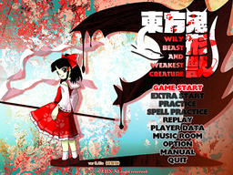

- Welcome to Touhou Wiki!
- Please register to edit. For assistance, check in with our Discord server or IRC channel.
Wily Beast and Weakest Creature
Wily Beast and Weakest Creature | |
|---|---|
|
 | |
| Developer | |
| Publisher | |
| Released |
Trial: May 5, 2019 (Reitaisai 16) |
| Genre |
Vertical Danmaku Shooting Game |
| Gameplay |
Single-Player Story Mode |
Touhou
Contents
Gameplay[edit]
There are three main characters: Reimu Hakurei, Marisa Kirisame, and Youmu Konpaku. The player can equip one of three animal spirits, as well as activate a temporary hyper mode (known as "Roaring Mode") corresponding to each. "Wolf" powers up the player's focused shot, "Otter" either powers up the player's bombs or provides a bullet-erasing barrier, and "Eagle" powers up the player's unfocused shot.[1]
Concept[edit]
In the game's preliminary description, ZUN describes it as "a shooting game that's darker than usual, full of animal elements, and just a bit aggressive."[1]
Story[edit]
Reimu, Marisa and Youmu encounter several animal spirits from Hell, who claim that their fellow animal spirits are plotting to take over the surface world. The three heroines team up with the spirits, and venture into Hell to take out this new potential threat.
Music[edit]
Press[edit]
Wily Beast and Weakest Creature was first announced on ZUN's blog on April 17, 2019, along with information about the characters and story, and several in-development screenshots.
References[edit]
- ↑ 1.0 1.1 1.2 ZUN (April 17, 2019). "東方Project 第17弾です" (in 日本語).
| |||||||||||||||||||||||||||||||||||||||||||||||||||||
| |||||||||||||||||||||||||||||